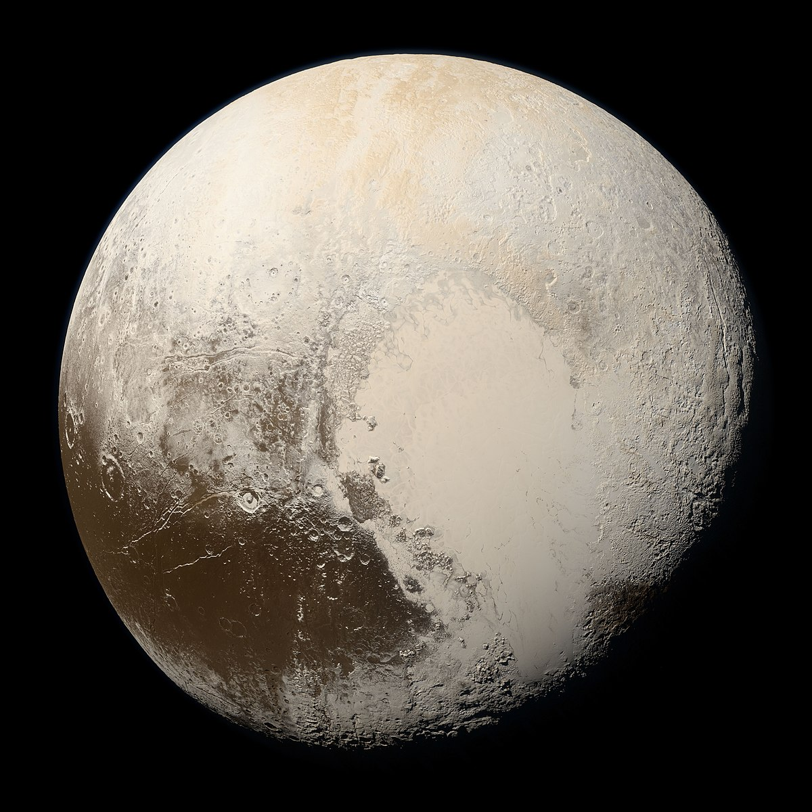

your sun is in...
Scorpio

"The Scorpion"

Characteristics of a Scorpio:
* passionate
* persistent
* mysterious
* brave
* loyal
* strategic
* protective
* passionate
* persistent
* mysterious
* brave
* loyal
* strategic
* protective
Sun Signs
Just as the sun is the center point of our solar system, the sun signs represent the center aspects of a person. Your sun sign is one of twelve zodiacs that is based on the position of the Earth in relation to the sun on the day you were born. Because the sun has the strongest pull on the earth, sun signs influence people the most. Therefore, your sun sign can tell you the core characteristics of who you are and how you express yourself to the world.

Element - Water
Each sign is represented by one of four elements: Fire, Earth, Air, or Water. The elements represent a ruling quality that the three signs within this element all share.
Scorpio Celebrities
Frank Ocean
Born: October 28th, 1987
Kendall Jenner
Born: November 3rd, 1995

Ryan Reynolds
Born: October 23rd, 1976

Drake
Born: October 24th, 1986
Leonardo DiCaprio
Born: November 11th, 1974
Anne Hathaway
Born: November 12th, 1982
Ruling Planet:

Pluto rules power, transformation, and regeneration
The ruling planet of a sign determines many of its associated character traits. Pluto is the ruler of the underworld, and the planet of power and regeneration. For Scorpios, this makes them often the most mysterious sign of the zodiac. They are typically focused, reserved, and intimidating upon first meeting them. However, once you get to know them, you uncover a whole new world of traits. With the planet of power and the symbol of the scorpion, Scorpios can often carry a charming yet deadly demeanor. However, once you earn their trust, they can become one of the most loyal friends you will ever make.
The Sign's Quality:
A sign's quality correlates strongly to their relation to the seasons. The fixed signs all fall under the middle of the seasons, making them often known as the stabilizers who act as the middle grounds. The Earth enters Scorpio during the middle of fall, emphasizing their tedency to initially be cold and closed off to those they don't know. And because they are the fixed water sign, their energy becomes extremely focused on their own passions and inner feelings. However, with pluto's power of transformation, their fixed quality gives them the ability to rejuvenate things into strong and solid plans to build upon.
Fixed
scorpios are falsely stereotyped as
vengeful and manipulative
when in reality they are strategic and protective
Most Compatible With:
listen to your daily horoscope on spotify